Directional Technologies, Inc. (DTI) · 16:9, 1920 × 1080 · 3:08 · synchronized to the original recorded narration
Draft for review, 2026-11-04. Frames are rendered from the actual 3D production files (draft quality).
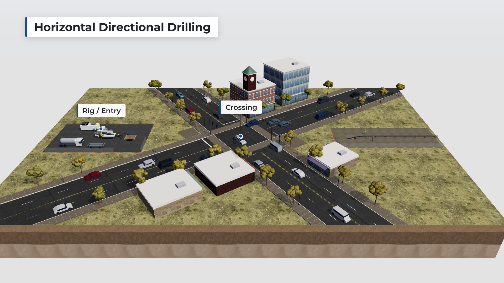
No narration (silent opening, as in the original).
Stable, elevated three-quarter view of the whole crossing: rig and entry area (left), the intersection, the exit and pipe staging area (right), with the brick clock-tower building as the landmark. The proposed alignment draws in as a white dashed planning line.
Infrastructure owners · Project managers · Estimators
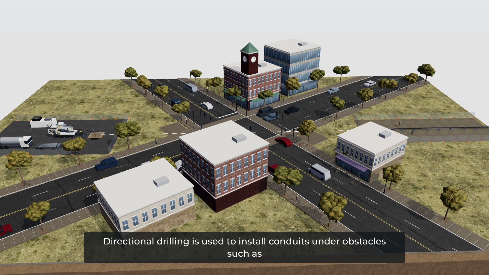
0:04.1 Directional drilling is used to install conduits under obstacles such as roads, buildings and wetlands.
Same overview, easing closer to the crossing. The obstacles HDD passes beneath are named in a small graphic as they are spoken (roads, buildings, wetlands).
Infrastructure owners · Civil and utility engineers
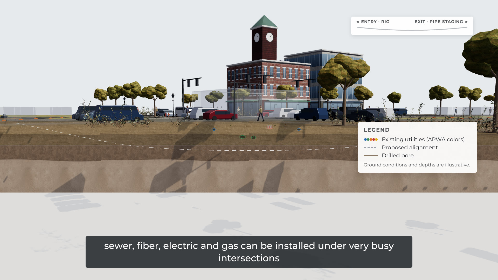
0:10.5 As demonstrated in this video, conduits such as water, sewer, fiber, electric and gas can be installed under very busy intersections without disruption of traffic.
The view moves down to the longitudinal section along the alignment (entry left, exit right). The ground in front is shown as a faint translucent volume, clearly a visualization. Existing utilities appear in section; the proposed bore is a white dashed profile beneath them. A separate graphic lists typical HDD applications as they are named (not five lines in this bore). Traffic keeps moving above.
Civil and utility engineers · Geologists · Estimators
Profile shape and depth below the utilities (illustrative). Legend distinguishes existing utilities, proposed alignment and (later) installed pipe.
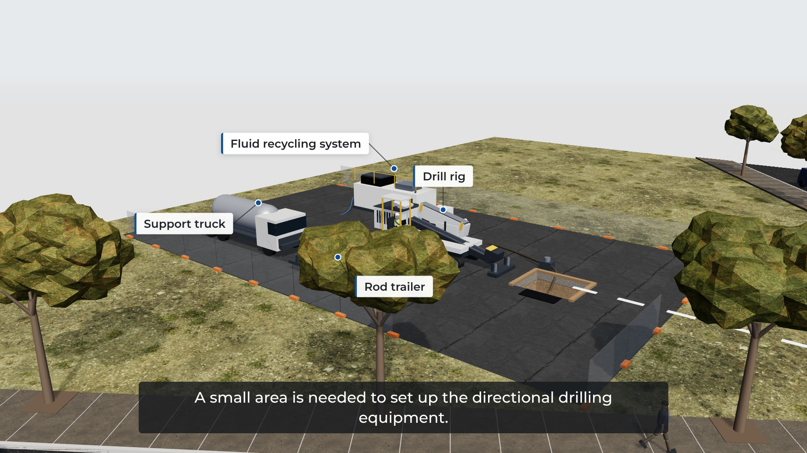
0:22.1 A small area is needed to set up the directional drilling equipment.
0:26.0 This area can be strategically placed away from congestion and business activities.
The section closes and the view moves to the rig / entry area: rig aligned to the entry, rod trailer, fluid recycling system and pump, support truck with its hose to the recycler, crew positions and room to move. Then the view rises to show the work area set back from traffic lanes and business entrances.
Project managers · Contractors · Estimators
Equipment layout and spacing for a plausible mid-size spread; hose routing.
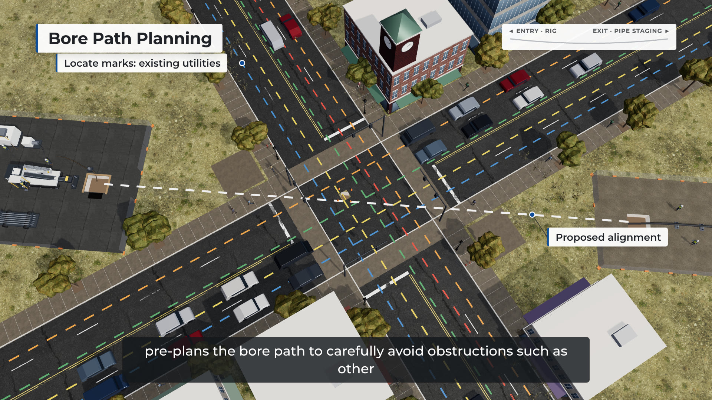
0:31.7 Before the directional drilling begins, the directional drilling crew pre-plans the bore path to carefully avoid obstructions such as other underground utilities.
The crew lead reviews the plan and profile on a tablet at the truck; an illustrative plan and profile sheet relates site information to the crossing. Plan view: utility locate marks (APWA colors) and the white proposed alignment; a localized test hole (potholing) verifies the gas main where the bore crosses it. Section: the proposed profile below the utilities, with separation set by the project design (no values). The view then moves to the entry pit.
Civil and utility engineers · Geologists · Estimators · Project managers
Plan/profile content, potholing location and presentation, separation graphic (no universal values).
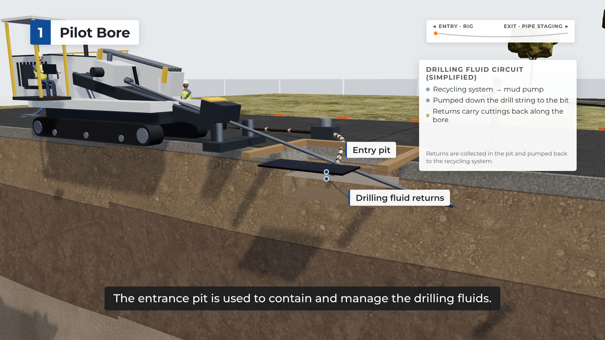
0:48.2 The horizontal bore begins with the directional drill bit entering the entrance pit.
0:53.4 The entrance pit is used to contain and manage the drilling fluids.
Entry close-up, sectioned (entry left): rods feed from the carriage through the vise along the drill frame into the entry pit and through the pit wall at the entry angle. A short fluid diagram shows supply down the drill string and returns carrying cuttings back to the pit, pumped to the recycling system.
Project managers · Environmental consultants · Contractors
Entry angle alignment of frame, rods and pit; pit collection arrangement; fluid circuit (supply, returns, recycling).
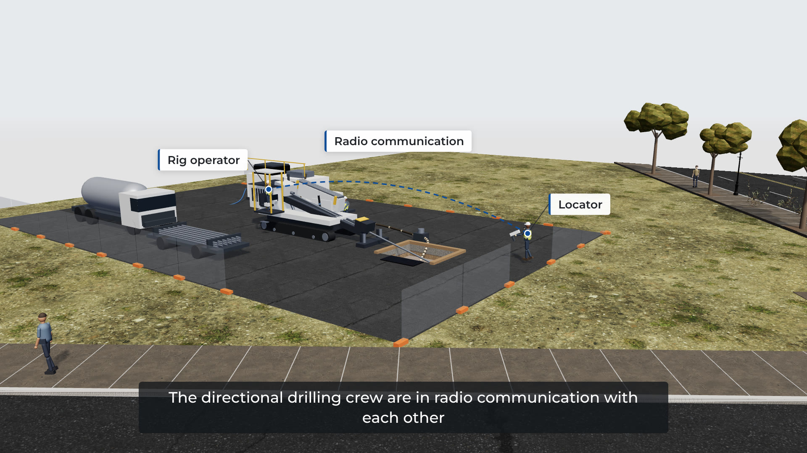
0:57.5 The directional drilling crew are in radio communication with each other throughout the entire process.
Wider view of the entry side: the locator, standing above the drill head with the receiver, calls on the radio; the operator answers from the controls. Both stay at their positions in the site model.
Project managers · Contractors
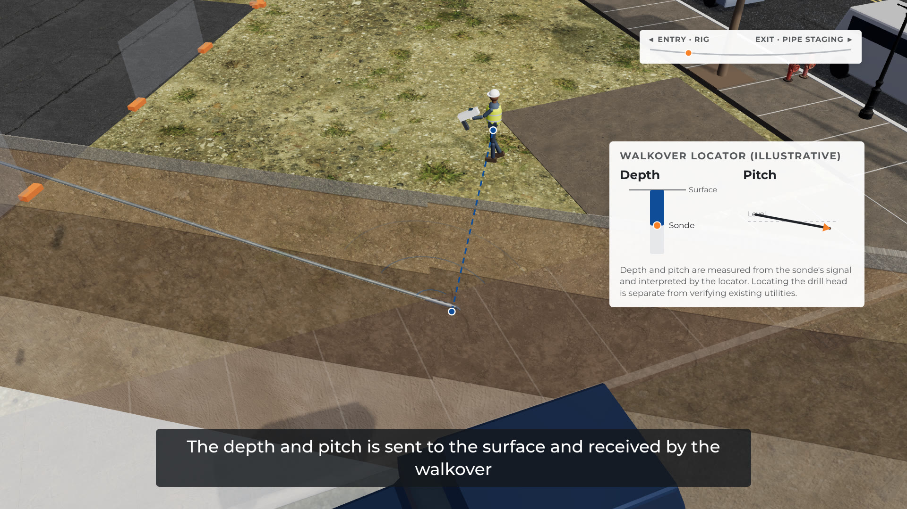
1:04.4 The directional drill bit is tracked by a sonde, or radio detection device housed within its extended connection to the directional drill pipe.
1:12.9 The depth and pitch is sent to the surface and received by the walkover locating device.
1:18.0 The locator then gathers and interprets the information and gives directions to the directional drill operator on which way to steer the drill bit.
Close-up underground: drill bit, sonde housing (the housing turns see-through to show the transmitter) and drill rod. The view widens to the locator above: the receiver measures depth and pitch from the sonde's signal, and the locator interprets the readings (illustrative display). The locator then relays steering directions to the operator.
Civil and utility engineers · Geologists · Project managers
Sonde position in the housing behind the bit; that locating the head is separate from verifying utilities; display content.
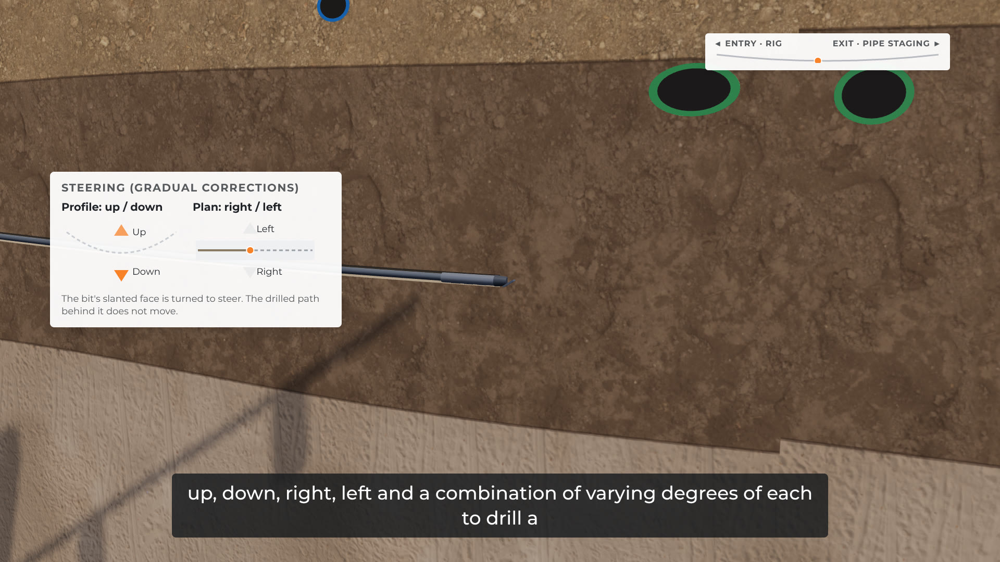
1:27.2 An experienced directional drilling crew can navigate and steer the drill bit up, down, right, left and a combination of varying degrees of each to drill a desired horizontal bore path.
1:38.9 The drilling crew has the ability to determine the exact depth and location of the drill bit at all times.
Following the advancing drill head: the bit's slanted face is rotated to steer, and the path ahead changes gradually. Up and down are shown in the profile; right and left in a plan inset, where the head stays on the planned line. The drilled hole behind does not move. The view rises to the locator directly above the head, then follows the head into the exit pit.
Civil and utility engineers · Geologists · Estimators
Steering by tool face (gradual corrections), plan inset, locate line wording, exit arrival.
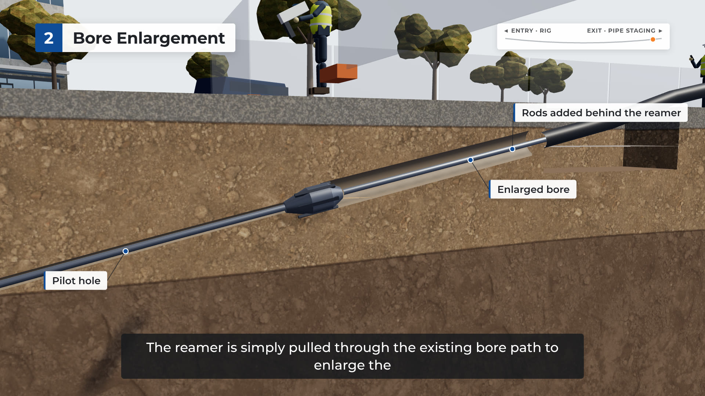
1:47.7 A typical mid-sized directional drill uses a 4-inch drill bit to drill a pilot bore.
1:53.4 The bore path is typically enlarged to one and a half size the conduit that is being installed.
1:58.8 In this installation, the bore path has to be enlarged to accommodate the conduit and a reamer is attached to cut a larger diameter hole.
2:07.2 The reamer is simply pulled through the existing bore path to enlarge the hole.
2:12.2 As depicted in this video and as with most directional drilling projects, very little of the normal city activities were interrupted during the conduit installation.
Section close-up of the completed pilot hole around the drill rod. A larger sizing graphic compares the pilot bore, product pipe outside diameter and enlarged bore (the narrated sizes as an example only). At the exit pit the crew removes the bit and sonde and attaches the reamer; the reamer is pulled back toward the rig, cutting the enlarged bore along the same alignment, while rods are added behind it so the string stays in the hole for the pullback.
Civil and utility engineers · Estimators · Contractors
Tool change at the exit, reaming direction (toward the rig), proportion of pilot vs enlarged bore, trailing rods for the pullback.
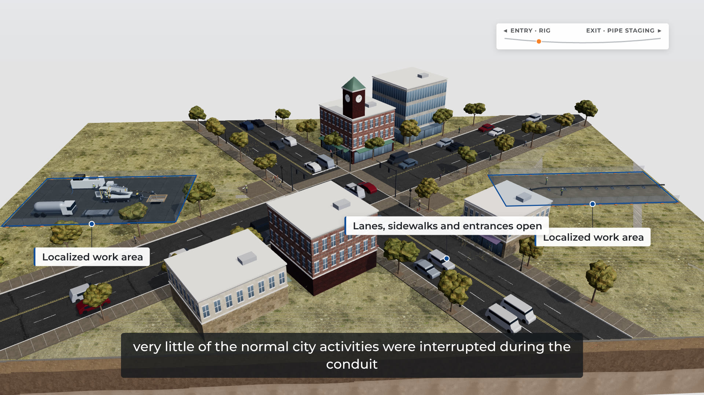
2:12.2 As depicted in this video and as with most directional drilling projects, very little of the normal city activities were interrupted during the conduit installation.
2:23.8 After the bore path is enlarged, the conduit is simply pulled into place by the directional drill rig.
Back to the established overview: the two localized work areas behind fencing, with traffic, signals, sidewalks and storefront entrances in normal use. A small orientation bar shows the reamer's progress underground.
Infrastructure owners · Project managers · Contractors
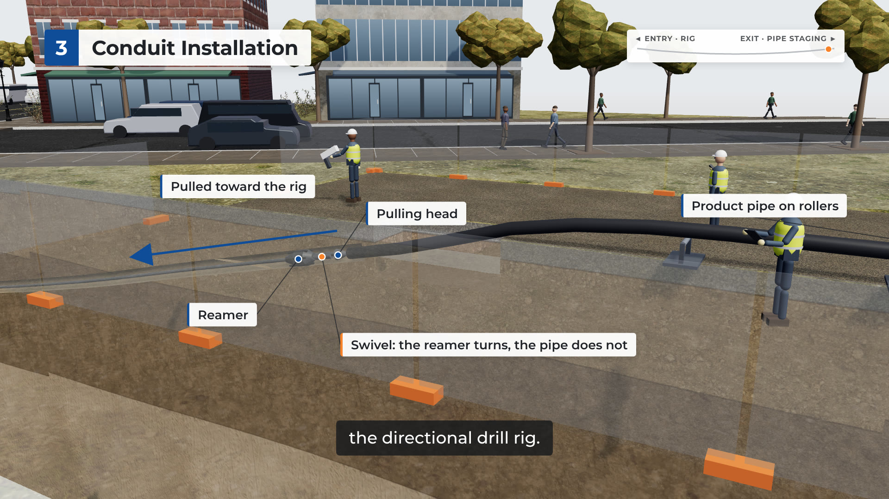
2:23.8 After the bore path is enlarged, the conduit is simply pulled into place by the directional drill rig.
Exit side: the product pipe is staged on roller stands and runs in a smooth, supported curve into the exit pit. The pullback assembly connects the drill string, reamer, swivel and pulling head to the pipe; the reamer turns while the swivel keeps the pipe from rotating; the rig pulls everything toward itself.
Civil and utility engineers · Contractors · Project managers
Assembly order and connections; swivel function; pipe support and approach curve; pull direction.
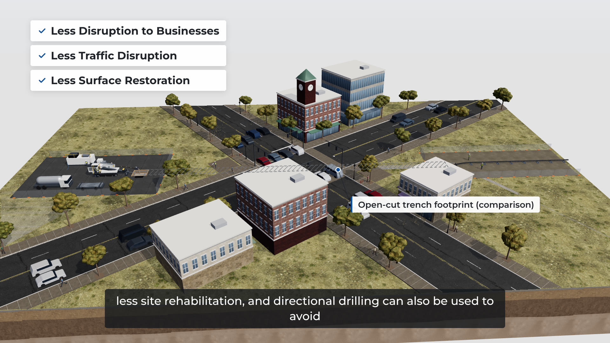
2:30.8 This method of installing utilities has many benefits that include less disruption of commercial activities, less disruption of traffic, less site rehabilitation, and directional drilling can also be used to avoid damage to wetlands, streams, and for river crossings.
The narrated benefits shown directly: storefront entrances and sidewalks in use next to the work area; traffic moving through the intersection; and a surface comparison of the two localized work areas against the footprint an open-cut trench along the same route would need (illustrative).
Infrastructure owners · Project managers · Environmental consultants
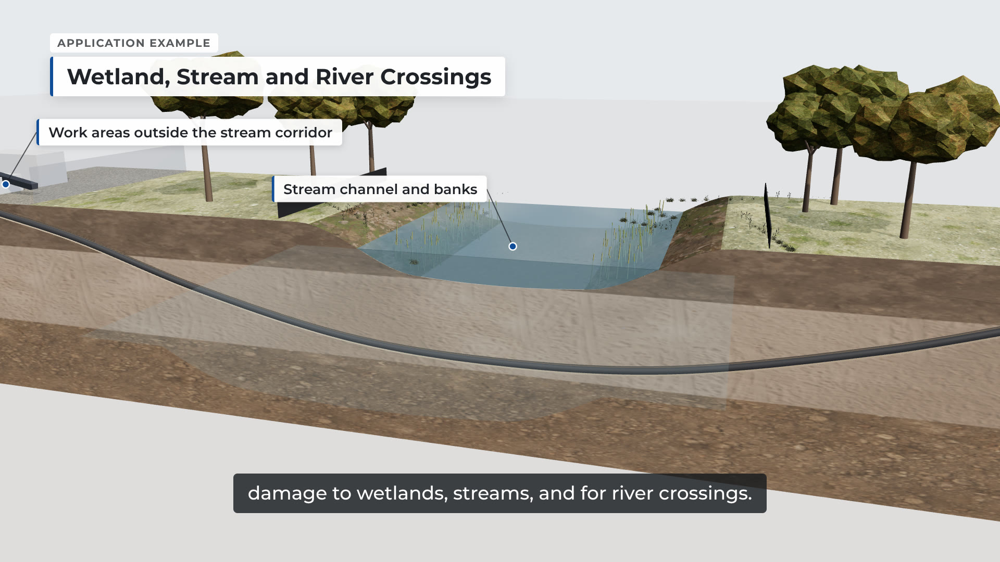
No narration (silent opening, as in the original).
A separate application example (titled as such): a stream with sloped banks, a channel bed, water and riparian vegetation. Entry and exit work areas sit outside the stream corridor; the bore passes beneath the channel on a smooth profile with the pipe installed.
Environmental consultants · Geologists · Civil and utility engineers
Profile below the channel and setbacks (illustrative, no stated distances).
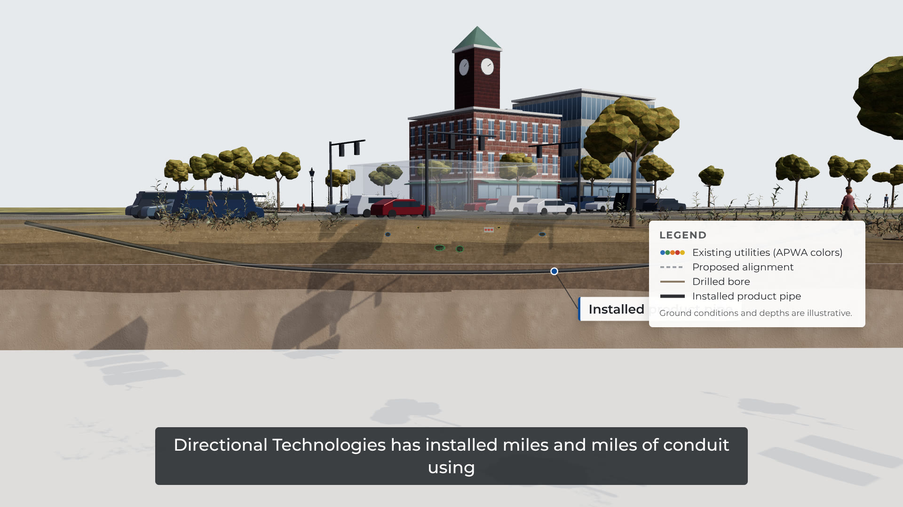
2:50.9 Directional Technologies has installed miles and miles of conduit using directional drilling for over 30 years.
Back on the urban site: the completed crossing in section. The product pipe is in place beneath the utilities, the pits are restored, equipment is gone and traffic moves above. A short line accompanies 'for over 30 years'.
Infrastructure owners · Project managers
Final pipe position; restored pits.
2:59.5 Call us today to bring that level of experience to your next trenchless conduit installation.
DTI end card: approved logo, 'HDD Expertise Since 1992', 'Discuss Your Next HDD Project', contact details.
All